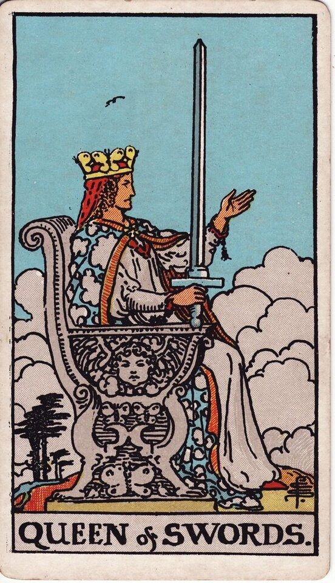

Minor Arcana · Suit of Swords
Queen of Swords Tarot Card Meaning
The Queen of Swords is clear-eyed truth - perceptive, honest, independent, boundaried. Want to know what it means in your spread? Every reader on our line is hand-vetted - connect in under 60 seconds, $1 for your first minute, hang up anytime.
- Hand-vetted readers
- Available 24/7
- Hang up anytime

Queen of Swords - What It Shows
The Queen sits upright on a throne carved with butterflies and a cherub, one hand raised, the other holding a sword skyward. Clouds gather but her gaze is clear and level. She has mastered the air suit inwardly: she's felt loss (the suit's hard cards) and turned it into perception rather than bitterness. The Queen of Swords is clarity earned through experience - honest, fair, and unsentimental.
Queen of Swords Upright Meaning
Upright, the Queen of Swords is clear thinking, honesty, and independence. Sharp discernment, fair judgment, healthy boundaries, and truth spoken without cruelty. She's been through things and come out wiser, not harder. As a quality to embody: see clearly, speak honestly, hold your boundaries, and don't let sentiment cloud your judgment.
Queen of Swords Reversed Meaning
Reversed, clarity curdles. Coldness, bitterness, harsh or cutting words, isolation, hypercriticism, or using sharpness as a shield. The perception is intact but the warmth and fairness have gone out of it - wisdom soured into walls.
Queen of Swords in Love & Relationships
In love, the Queen of Swords is honesty, clear boundaries, and not being fooled - wanting truth over flattery, or someone independent and discerning. Example: a caller unsure whether to "soften" her standards for a connection drew this card; the read affirmed her clarity - the Queen doesn't lower her boundaries to be liked, and that discernment is a strength, not coldness.
Queen of Swords in Career & Money
For work it's clear judgment, honest leadership, independence, and cutting through nonsense to the truth. Example: someone deciding whether to speak an unpopular truth at work pulled this card; the message backed the honesty, delivered with the Queen's fairness rather than the reversed Queen's edge.
Queen of Swords as Advice
As advice: be honest and clear-sighted, hold your boundaries, and decide with your head - but keep the truth fair and kind rather than cutting.
Queen of Swords Reversed in Love & Career
Reversed, this card deserves a closer look by area. In love, it's guardedness hardened into coldness - pushing people away, cutting remarks, bitterness from past hurt, or being so independent that closeness can't get in. In career, reversed it's harsh criticism, an icy or punishing manner, or isolation that costs you allies. The reversed Queen's question is whether your clarity is still fair or has turned into armour. A live reader can help you tell discernment from defensiveness here.
What People Ask About the Queen of Swords
The questions readers hear most about this card:
"Queen of Swords as feelings?"
Honest, discerning, guarded - caring but carefully, not swept away.
"Is it a specific person?"
Often an independent, perceptive, direct individual - or that energy in you.
"Reversed - is someone being cold to me?"
Possibly bitterness or harshness, often from old hurt; context decides.
"Does it mean be more boundaried?"
As advice, yes - clear, honest, and firm.
Queen of Swords - Yes or No?
Upright: a clear, conditional yes - yes if it stands up to honest scrutiny. Reversed leans no, or "not while bitterness is steering."
Queen of Swords Timing in a Reading
Timing is the least precise thing tarot does, so treat this as a lean, not a date. Court cards describe a person or energy more than a clock; when the Queen of Swords does flag timing, readers frame it as a clear-headed decision point you're approaching rather than a set date. Reversed, timing stalls under bitterness or isolation. A live reader reads timing from the full spread and your question far more reliably than the card alone.
Queen of Swords Card Combinations
Context changes everything - a few pairings readers see often:
Queen of Swords + King of Swords
Clear, principled judgment - fair, honest authority.
Queen of Swords + Three of Swords
Hard-won clarity born from past heartbreak.
Queen of Swords + Two of Cups (rev)
Independence or guardedness keeping connection at arm's length.
Queen of Swords in a Tarot Reading
A meanings page is the map; a live reading is the territory. The Queen of Swords shifts with its position and the cards around it - which is what a hand-vetted reader interprets for your question. See the full Suit of Swords, all 56 cards on the Minor Arcana hub, or start a phone tarot reading.
← Knight of Swords · Next: King of Swords →
What Does the Queen of Swords Mean for You?
A meanings list is the map; a live reading is the territory. We'll connect you with the right hand-vetted tarot reader in under 60 seconds. $1/min first call · 15 minutes for $10 · hang up anytime · 100% satisfaction promise.
Call (888) 920-6662 NowQueen of Swords - Frequently Asked Questions
What does the Queen of Swords mean?
Clear, honest, independent perception - sharp judgment and healthy boundaries.
What does it mean reversed?
Coldness, bitterness, harsh words, isolation, or being overly critical.
What does it mean as feelings?
Honest and discerning but guarded - caring carefully, not swept away.
What does it mean as a person?
An independent, perceptive, direct, principled individual.
How much does a reading cost?
First-time callers pay $1/min, or 15 minutes for $10, and you can hang up anytime.
Get Your Tarot Reading Now
Connected to a hand-vetted reader in under 60 seconds, the cards pulled on your real question, and you hang up with clarity.
Call (888) 920-6662